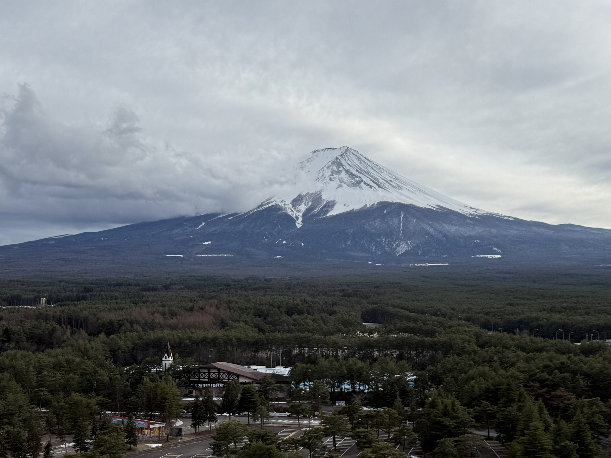
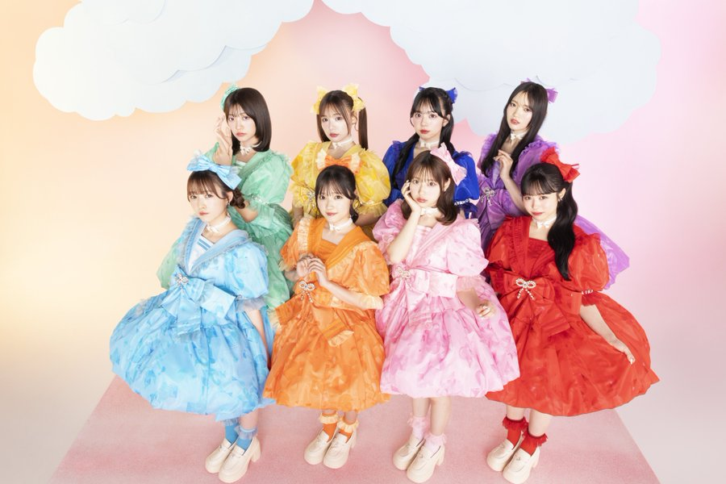

マイブーム
最近ハマっていることを紹介します。
旅行
小さい頃はよく家族で旅行に行っていましたが、成長するにつれ部活やバイトで予定が合わずなかなかいけませんでした。 私は旅行先のホテルで過ごす時間が大好きなので、ホテルを決めてから旅の日程を考えました。下の写真は3月に 高校の同級生といった卒業旅行で撮ったものです。自分で働いてためたお金で行く旅行は楽しくもあり、何かイレギュラーが 起きたときは少し大変でした。しかし、これを機に私はまた旅行がとても楽しくなったのでいつか47都道府県 すべて行きたいなと思ってます。

CUTIE STREET
今まで2次元にしか興味なかった自分が初めて推した3次元のアイドルです。推しは担当カラーピンクの桜庭遥花ちゃん(ぱるたん)です。 ME:Iが生まれたオーディション番組に出演していて、ダンスも歌も未経験だったのに最終に残るまでに成長した姿に惹かれました。 オーディションには選ばれませんでしたが、その後TikTOkでCUTIE STREETとしてデビューしたことを知って、また推し始めました。 デビュー直後はイオンなどでイベントをしていたのでたくさん行きました。最初はぱるたんを推していましたが、ライブや特典会に通ううちに ほかのメンバーの魅力に気づき、いつのまにかグループ全体が大好きになりました。残念ながら大きなライブ会場には行けないので、 曲をたくさん聞いて、SNSでいいねやコメントをしてこれからも応援していきたいです。
